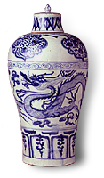

How can such a question be answered in an institution the size of the British Museum? Over 250 years of acquisitions has resulted in documentation systems centred on hand-written registers, catalogues, index cards, excavation/fieldwork reports, and a variety of other documents added to and amended by countless scholars over the years.
The development of computers has offered a way through this and enabled the Museum to increase the accessibility of its information and the collections themselves. The Museum has a database of over 1.5 million records for almost 2 million individual objects. By having a standardised method of recording the information it is now possible to answer this and other complex enquiries.
The variation in the styles, levels of detail and content of the various sources of written information is overcome by entering information such as the name of the object, what it is made of, when and where it was made, and who made it. It is possible to search for objects such as bronze vessels made in China or Japan in the 18th Century.
Standardising and controlling information is essential to ensure the best possible results are obtained when a user searches the database for particular items; for example, the names of artists represented in the collections of Prints & Drawings or methods of acquisition.
The Collections Data Management Section has a number of thesauri for controlling information, such as what the object is and what it is made of , which are adaptable to the enormous range of terms in, for example, Ethnography, or to the specificity of some of Medieval and Later's collections. These thesauri are being continually updated and expanded as new areas of the collections are entered and as new objects are acquired.
So, how about the dragons? By searching a variety of fields (2D design, 3D form, materials, subject/iconography and a free-text description) the Museum currently has 2400 references to dragons. These are made of a variety of materials from silver, gold, bronze and iron to ivory, horn, leather, porcelain and earthenware and date from 2300BC - 1997 for cultures and periods as widespread as Assyrian and Babylonian, Anglo-Saxon, Byzantine, Medieval, Mughal, Roman Imperial Period in Egypt, Han and Ming Dynasties in China and the Edo Period in Japan. The objects themselves include, amongst other things, shadow puppets, jewellery, swords, seals, costume, vessels, chess-pieces, figures, finger-rings, prints, drawings, netsuke, masks, door-handles, a "ceramic pillow with dragons and flowers", a "skin bag for Dragon's blood" and, of course, a bowl containing "dragon's blood" (resin from a cinnabar tree!).